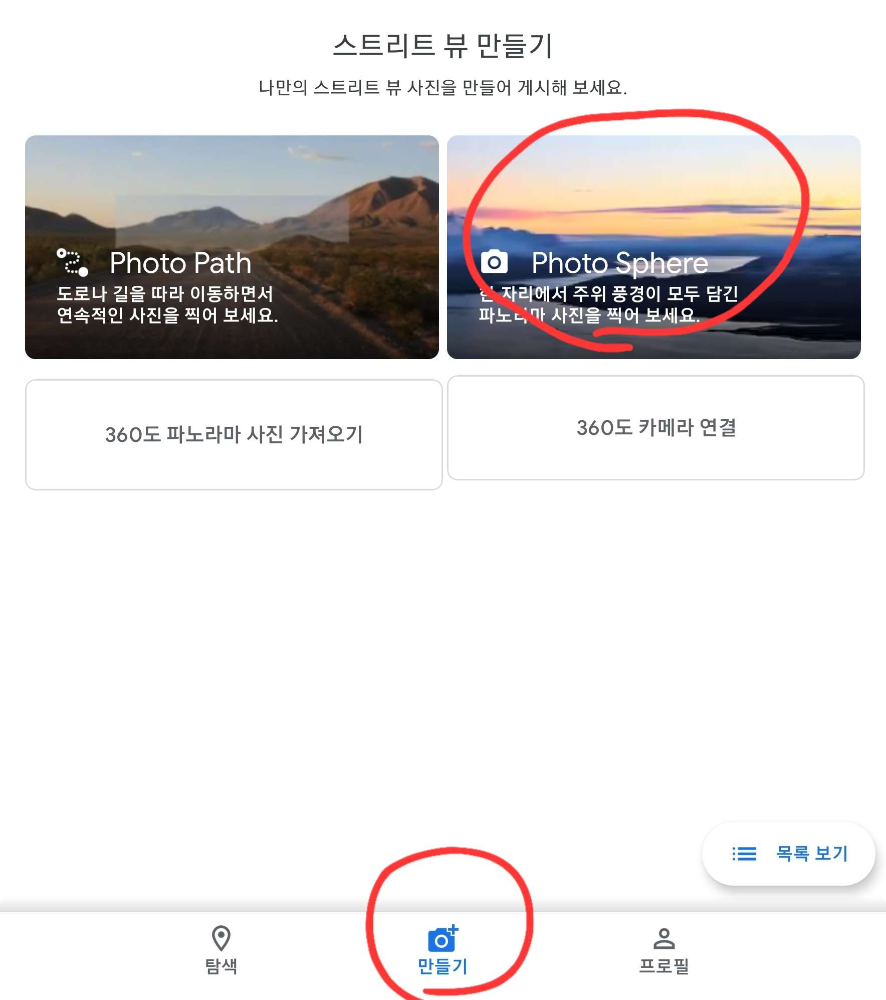
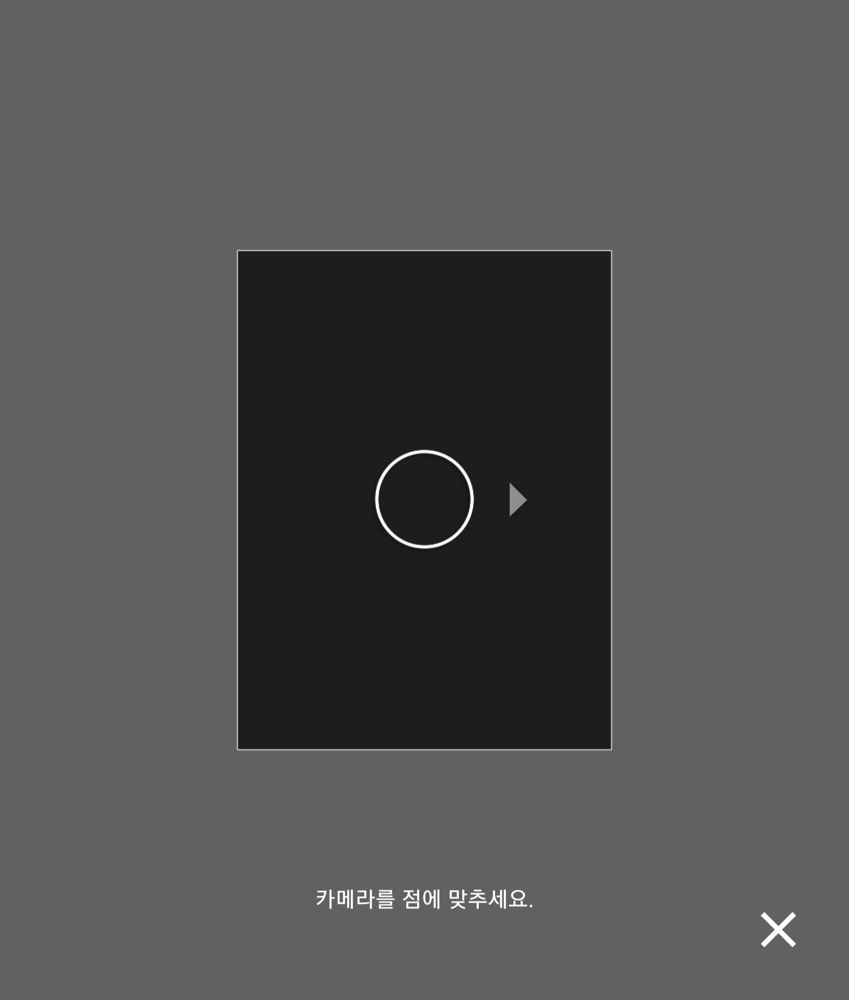

셀을 확인한 후에 자신이 신청한 스탑이
실제로 존재한다는 것을 증명을 해야합니다.
"스트리트 뷰"라는 것을 이용합니다.
스트리트 뷰는 지도에서 특정 지역의 주변 모습을 보여주는 360도로 촬영된 사진을 의미합니다.
포켓몬고 스탑 심사를 진행할 경우 후보를 확인 할 목적으로 이용됩니다.
(구글 스트리트 뷰O, 네이버 지도 스트리트 뷰 X)
그런데 스탑 신청을 하려는데 그 지역에 스트리트 뷰가 없다면 후보가 승인 될 가능성이 낮아집니다.
구글 지도에 스트리트 뷰를 업로드 하기 위해선
스트리트 뷰 라는 어플이 필요합니다.(구글 플레이 스토어 등 앱스토어 이용)
어플을 실행해주시면 하단에 "만들기", "photo sphere" 순으로 탭 해주세요.

그러면 카메라가 시작되면서 노란점에 맞추어서 사진을 여러 장 찍으셔야 합니다.

촬영이 끝나면 업로드를 해주시고
잠시 뒤 구글 지도에 여러분이 찍으신 스트리트뷰가 업로드 됩니다.
스트리트 뷰를 찍는 것은 선택입니다.
어디까지나 후보의 승인 가능성을 높이기 위한 작업입니다.
만약 구글 스트리트 뷰에 자신이 신청하려는 포켓스탑이 보인다면,
스트리트 뷰 업로드는 할 필요가 없죠.
필자가 겪은 스트리트 뷰가 필요 없는 케이스
구글 지도 인공 위성 사진에서 확인이 가능한 후보:
ex): 운동장, 광장 같은 큰 공간
*어디까지나 개인의 사례일 뿐이니 참고만 하세요.*